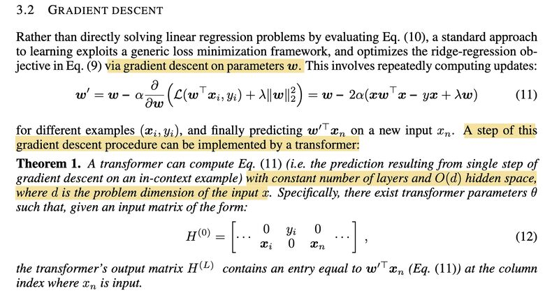

What Learning Algorithm Is In-Context Learning?

On the topic of in-context learning (ICL), the ability of Large Language Models (LLMs) to learn a new task from mere inference-time demonstrations without the need for costly retraining, I previously discussed a paper showing that the demonstrations can be viewed as secretly performing gradient descent [1] (see post [2]). However, another paper published on ArXiv barely a month before (and later in ICLR2023) provides an even more thorough explanation on why ICL works [3].
The authors in [3] first demonstrate, through constructive proofs, that transformers can solve linear regression problems by implementing either a single step of gradient descent (screenshot 1) or the closed-form solution (screenshot 2). They then compare the learning behaviors of ICL to those of various standard learning algorithms using two metrics — SPD (Squared Prediction Difference, screenshot 3) and ILWD (Implicit Linear Weight Difference; screenshot 4) — and conclude that ICL closely matches both predictions and weights to the ordinary least squares learner (screenshot 5). Even more interestingly, they show that transformers exhibit a “phase change” in their learning behaviors with varying model sizes, transitioning from gradient descent to ridge regression to ordinary least squares as model depth and hidden size increase (screenshot 6).
How do we correlate these findings with the observations that ICL implicitly engages in two tasks: Task Recognition (TR) and Task Learning (TL), where TR recognizes tasks from demonstrations and doesn’t improve as model size and number of demonstrations scale up, and TL learns new input-output mappings and does improve with increasing model size and number of demonstrations [4, discussed in 5]? And can we modify model architecture or the pre-training objectives to further enhance ICL?
Originally posted on LinkedIn.
References
[1] Damai Dai, Yutao Sun, Li Dong, Yaru Hao, Zhifang Sui, and Furu Wei. 2022. “Why Can GPT Learn In-Context? Language Models Secretly Perform Gradient Descent as Meta-Optimizers.” https://arxiv.org/abs/2212.10559
[2] Previous post: Why Does In-Context Learning Work?
[3] Ekin Akyürek, Dale Schuurmans, Jacob Andreas, Tengyu Ma, and Denny Zhou. 2022. “What learning algorithm is in-context learning? Investigations with linear models.” https://arxiv.org/abs/2211.15661
[4] Jane Pan, Tianyu Gao, Howard Chen, and Danqi Chen. 2023. “What In-Context Learning ‘Learns’ In-Context: Disentangling Task Recognition and Task Learning.” https://arxiv.org/abs/2305.09731
[5] Previous post: https://www.linkedin.com/posts/benjaminhan_llms-gpt3-nlp-activity-7073726814170337280-EED5